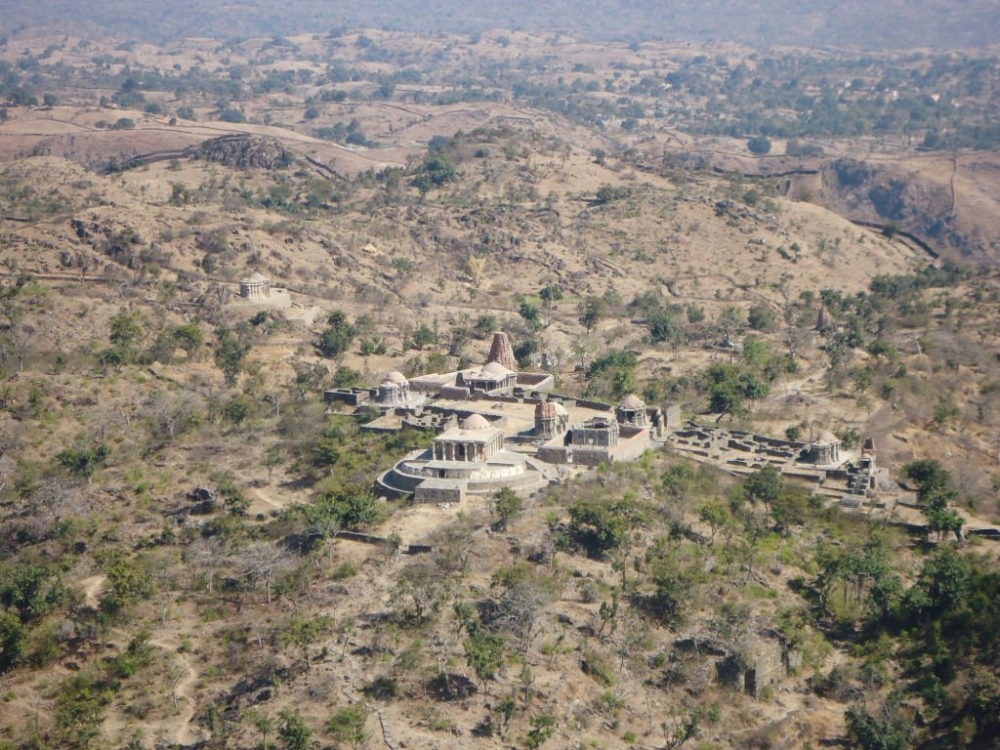
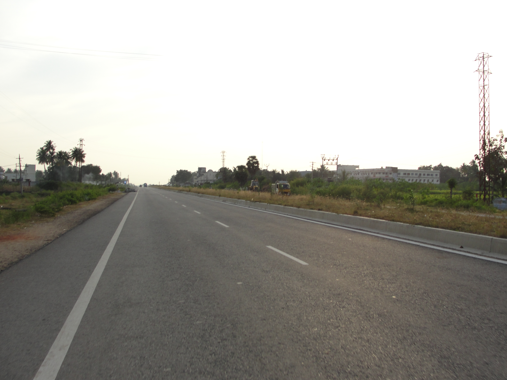

कुलधरा गांव
राजस्थान (Rajasthan) के जैसलमेर जिले का कुलधरा गांव (Kuldhara village). ये गांव पिछले 300 सालों से श्रापित है
Bhangarh Fort ये किला पहली नजर में ही देखने में अजीब और डरावना एहसास पैदा करता है.
नाहरगढ़ किला राजस्थान के नाहरगढ़ के किले में होने वाली अजीब घटनाओं के बारे में शोधकर्ताओं ने माना है

राणा कुंभा पैलेस राजस्थान के चतौड़गढ़ में स्थित राणा कुंभा पैलेस राज्य की सबसे डरावनी जगहों में से एक माना जाता

NH 79 हाईवे राजस्थान में अजमेर उदयपुर को जोड़ने वाले NH79 हाईवे को खून का रास्ता भ कहते हैं. इस रास्ते से गुजरने वाले लोगो ने यहां कई भूतिया गतिविधियों का अनुभव किया है।
कोई पत्थर में भगवान ढूंढ लेता है तो कोई पोधे या जानवर के आगे सिर झुकाता है. लेकिन, राजस्थान में एक ऐसी जगह है, जहां लोग किसी मूर्ति की नहीं, बल्कि मोटरसाइकिल की पूजा करते हैं